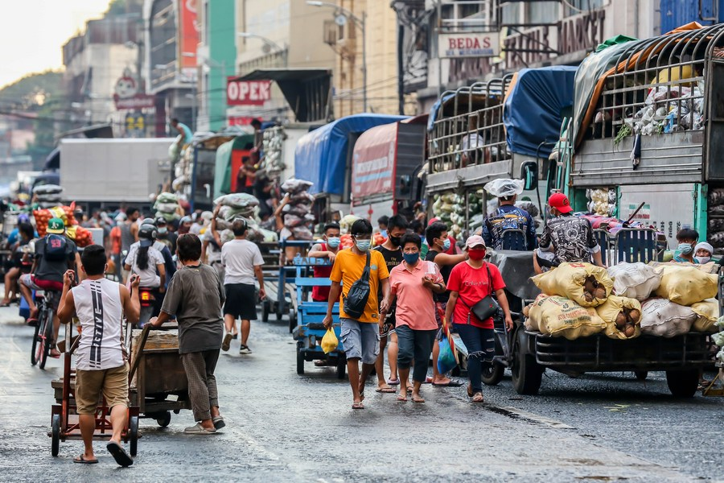
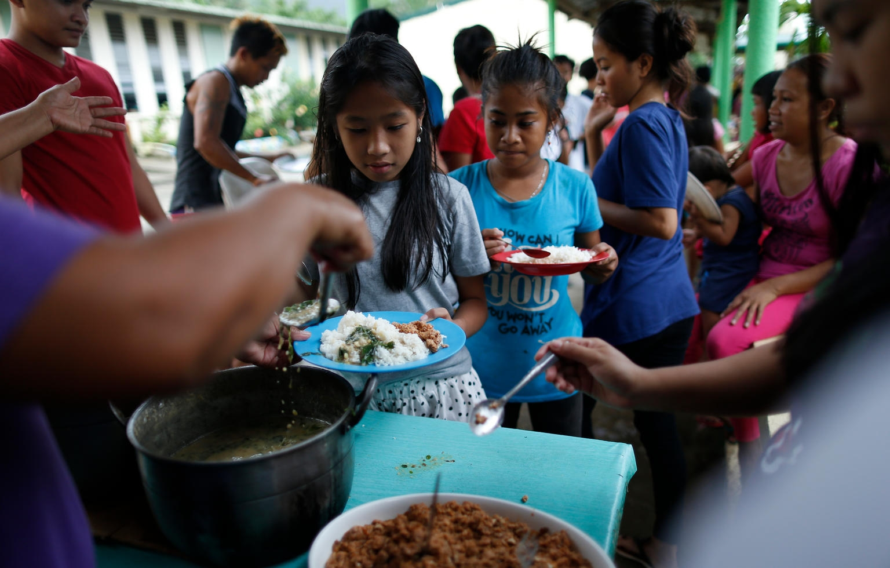
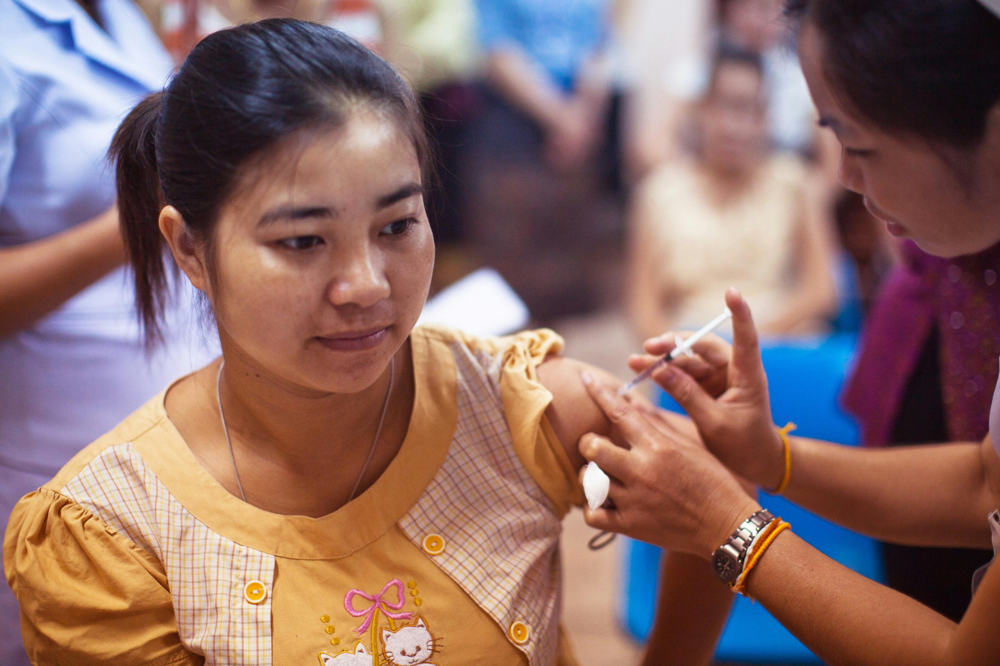
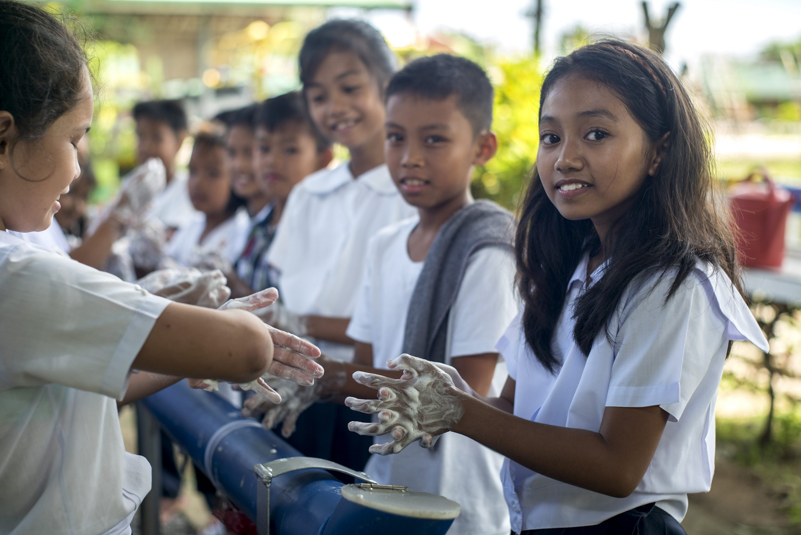
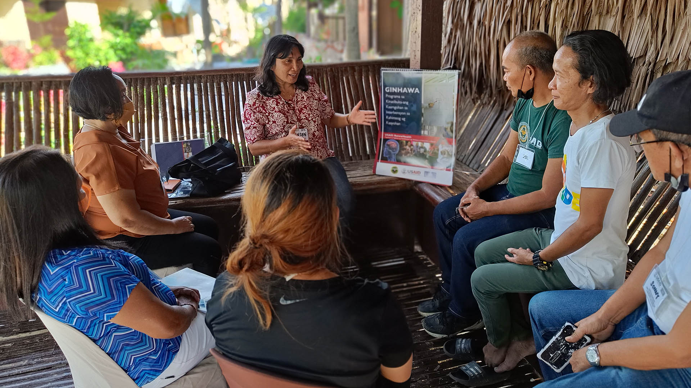
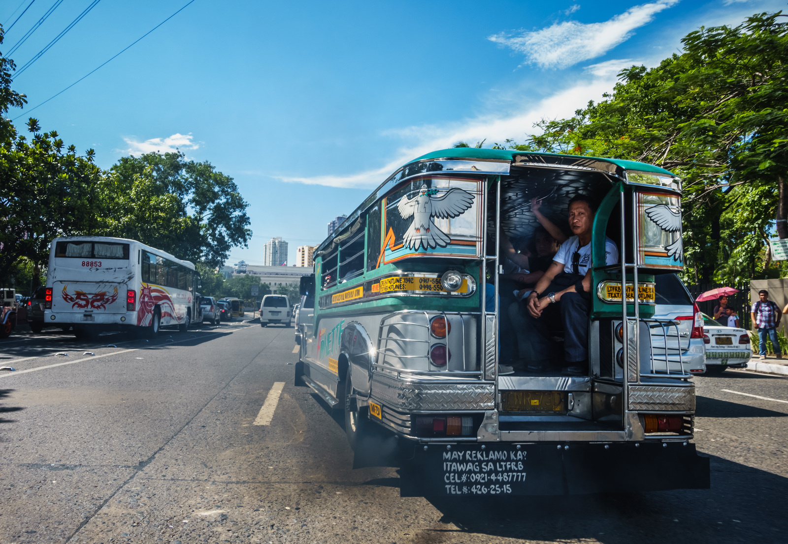

Public Health in the Philippines
The Philippines faces a complex landscape of public health challenges. While battling infectious diseases like tuberculosis and dengue, the country also grapples with a rise in non-communicable illnesses like heart disease and cancer. These issues are further compounded by limited access to healthcare, poverty,and the frequent occurrence of natural disasters.
Nutrition
Overcoming malnutrition in the Philippines requires a multi-pronged approach that tackles the problem at its root causes. Empowering mothers is a critical first step. Education programs can equip them with knowledge on proper infant and young child feeding practices, emphasizing nutrient-rich, locally available foods. This can be as simple as incorporating affordable, protein-rich options like small fish or legumes into meals. Government support through food fortification programs, ensuring staples like rice are enriched with essential vitamins and minerals, can further bridge nutritional gaps. Furthermore, fostering urban gardening initiatives and small-scale livestock projects in rural areas can increase access to fresh produce and protein sources, promoting dietary diversity within communities.
The battle against overnutrition necessitates a shift in dietary habits. Government regulations on marketing sugary drinks and processed foods can curb their appeal, particularly to children. Schools can play a vital role by promoting healthy eating habits through educational programs and offering nutritious meals in canteens. Additionally, promoting community kitchens and cooking demonstrations can equip families with the skills to prepare affordable, balanced meals. By working on multiple fronts – empowering mothers, increasing access to nutritious foods, and promoting healthy eating habits – the Philippines can address both undernutrition and overnutrition, paving the way for a healthier future for all Filipinos.
Vaccination
Imagine Aling Maria, a fish vendor at the bustling Divisoria market. She worries about protecting her grandchildren from diseases, but whispers of vaccine side effects on social media leave her hesitant. This scenario reflects a major hurdle in the Philippines' vaccination efforts: hesitancy fueled by misinformation. To overcome this, the solution lies in building trust. Local healthcare workers, who Filipinos often know and respect, can be empowered to address concerns in their communities. They can dispel myths with clear, science-based information, framed in the context of everyday life. Aling Maria might be more receptive to learning a vaccine protects her grandchildren from the same illness that put their neighbor's child in the hospital.
Furthermore, addressing logistical barriers is crucial. Long travel distances, especially in rural areas, can discourage vaccination. Mobile clinics and flexible vaccination schedules can make the process more accessible. Community leaders, trusted figures like Aling Maria's market captain, can also play a vital role in promoting vaccination and mobilizing residents. By working together, healthcare professionals, community leaders, and everyday Filipinos can turn the tide of vaccine hesitancy and ensure a healthier future for everyone.
Proper Hygiene
The Philippines wrestles with the issue of improper hygiene, primarily due to poverty and insufficient infrastructure. Many Filipinos, like residents in crowded apartment buildings, lack access to clean water and proper sanitation facilities. To address this, significant investment is needed in expanding clean water networks and building affordable, accessible toilets in densely populated areas.
However, infrastructure alone is not enough. Promoting a culture of sanitation through community education campaigns, using local language and demonstrations, is crucial. Engaging respected community leaders can amplify these messages and encourage behavior change. Making handwashing stations readily available and offering affordable hygiene products further supports a shift towards better personal hygiene practices. This two-pronged approach – infrastructure development and fostering healthy habits – paves the way for a healthier future for all Filipinos.
Mental Health
Addressing the mental health crisis in the Philippines requires a multi-pronged approach that tackles stigma, accessibility, and preventative measures. Firstly, dismantling the stigma surrounding mental health is crucial. Public awareness campaigns featuring relatable Filipino stories and positive portrayals of seeking help can normalize mental health struggles. Integrating mental health education into the school curriculum can further empower young Filipinos to identify and manage their emotions. Additionally, fostering open communication within families and communities can create a safe space for individuals to express their struggles without fear of judgment.
Secondly, increasing access to mental health services is essential. The government can invest in training more mental health professionals, particularly in underserved areas. Telehealth initiatives and online resources can further bridge the gap and make support more readily available. Furthermore, integrating mental health services into existing healthcare systems can streamline access and encourage early intervention. By tackling stigma and expanding access to care, the Philippines can create a more supportive environment where Filipinos feel empowered to prioritize their mental well-being.
Environmental Health
The Philippines faces a complex challenge in tackling environmental health problems. A crucial first step lies in strengthening environmental regulations and enforcement. Holding polluters accountable, particularly large corporations, deters irresponsible waste disposal and incentivizes sustainable practices. Investing in cleaner technologies and promoting renewable energy sources like solar and wind power can further reduce air and water pollution. Community-driven initiatives like tree planting programs and coastal cleanups can not only improve local environments but also foster a sense of ownership and environmental responsibility.
However, infrastructure alone is not enough. Promoting a culture of sanitation through community education campaigns, using local language and demonstrations, is crucial. Engaging respected community leaders can amplify these messages and encourage behavior change. Making handwashing stations readily available and offering affordable hygiene products further supports a shift towards better personal hygiene practices. This two-pronged approach – infrastructure development and fostering healthy habits – paves the way for a healthier future for all Filipinos.
